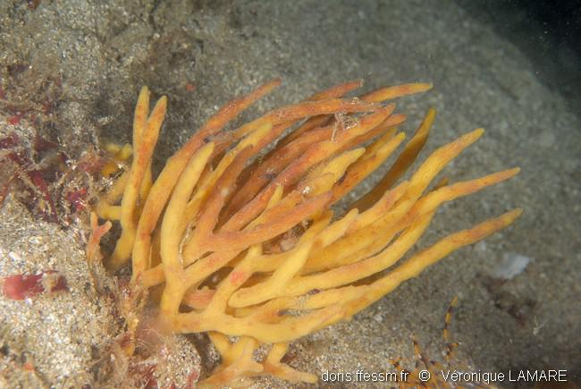
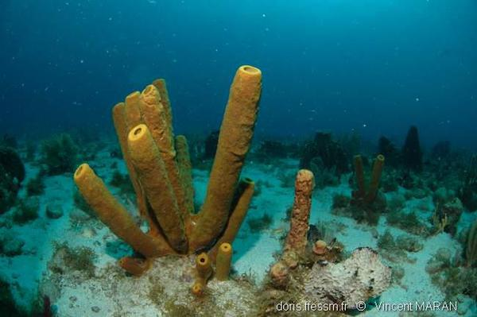

RECONNAÎTRE LES ANIMAUX MARINS ... pas si simple!
Spongiaires
Les Spongiaires qui forment les éponges, sont des animaux très primitifs et constituent des structures considérées comme les plus simples. Ce sont des organismes coloniaux qui se nourrissent en filtrant les particules dans l’eau. L’éponge est recouverte de minuscules trous, les pores inhalents, par lesquels l’eau va entrer, et une fois filtrée elle ressortira par des trous plus gros, les oscules.
L'embranchement des Spongiaires ou Porifères (éponges) rassemble des animaux que les anciens auteurs, plaçaient dans le groupe (aujourd'hui obsolète) des Coloentérés, et qu’il rapprochait de Protozoaires. Les Spongiaires sont bien cependant des métazoaires (animaux pluricellulaires) - les plus simples de tous. Leur corps, de forme très variable, mais ne présentant pas la symétrie rayonnée, et n'offrant ni tentacules, ni nématocystes, est creusé de cavités ou d'un système plus on moins complexe de cavités et de canaux, que parcourt constamment l'eau ambiante, le mésoderme étant distinct, renforcé fréquemment par des spicules calcaires ou siliceux, des fibres siliceuses ou cornées.
Le type fondamental de l'éponge est un sac dont la cavité est en rapport, avec l'extérieur, d'une part, par un large orifice appelé oscule, d'autre part, par de nombreux pores, de petites dimensions, appelés pores inhalants; ce sac est tapissé à l'intérieur de cellules flagellifères à collerette (choanocytes) qui ont pour rôle de déterminer un courant d'eau constant pénétrant par les pores inhalants, apportant des matières alimentaires au contact des cellules et sortant par l'oscule.
|  |  |